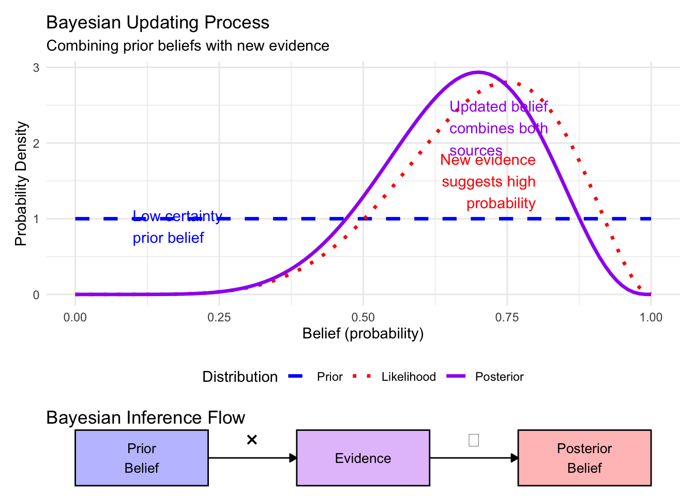
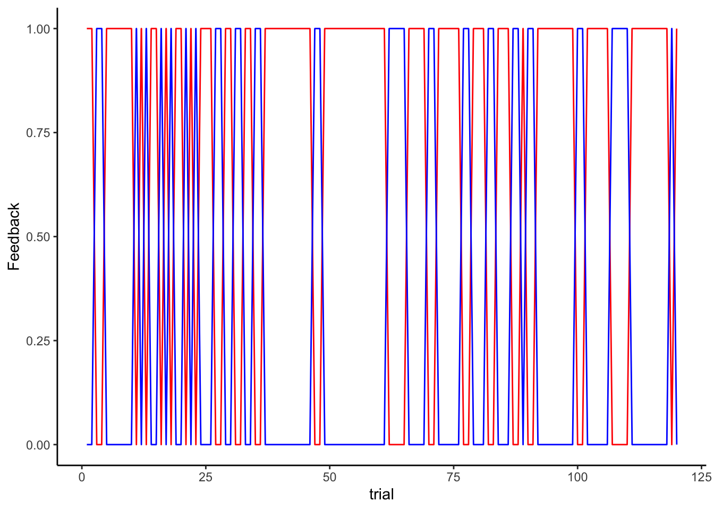
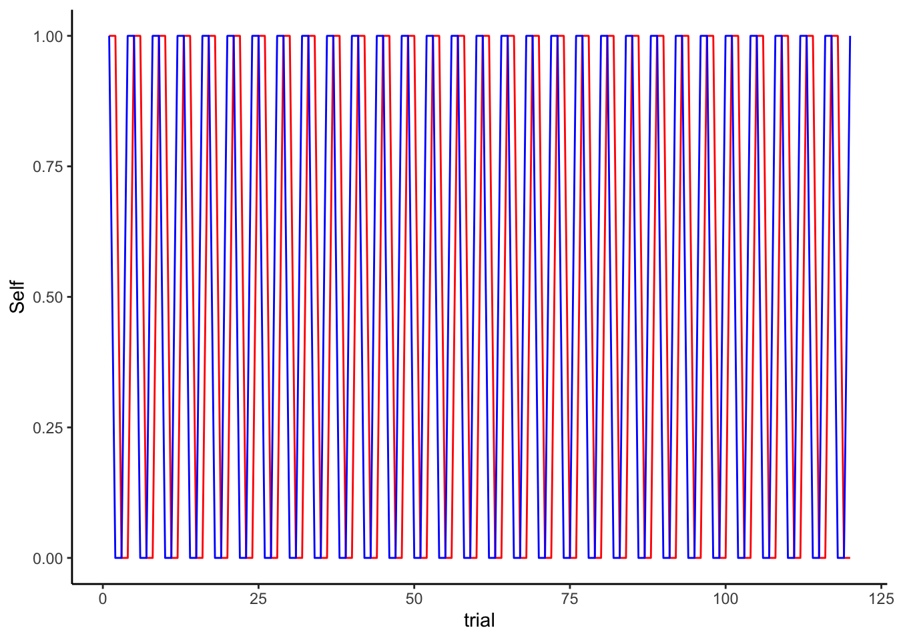

Chapter 3 Practical exercise 2 - From verbal to formal models
The aim of this practical exercise is to go from verbal to formal models. We will not just write a formula, we will implement these models as algorithms in R. By implementing the models of algorithms,
we are forced to make them very explicit in their assumptions;
we become able to simulate the models in a variety of different situations and therefore better understand their implications
So, the steps for today’s exercise are:
choose two of the models and formalize them, that is, produce an algorithm that enacts the strategy, so we can simulate them.
implement the algorithms as functions: getting an input and producing an output, so we can more easily implement them across various contexts (e.g. varying amount of trials, input, etc). See R4DataScience, if you need a refresher: https://r4ds.had.co.nz/functions.html
implement a Random Bias agent (choosing “head” 70% of the times) and get your agents to play against it for 120 trials (and save the data)
implement a Win-Stay-Lose-Shift agent (keeping the same choice if it won, changing it if it lost) and do the same.
Now scale up the simulation: have 100 agents for each of your strategy playing against both Random Bias and Win-Stay-Lose-Shift and save their data.
Figure out a good way to visualize the data to assess which strategy performs better, whether that changes over time and generally explore what the agents are doing.
3.2 Implementing a random agent
Remember a random agent is an agent that picks at random between “right” and “left” independently on what the opponent is doing. A random agent might be perfectly random (50% chance of choosing “right”, same for “left”) or biased. The variable “rate” determines the rate of choosing “right”.
rate <- 0.5
RandomAgent <- rbinom(trials, 1, rate) # we simply sample randomly from a binomial
# Now let's plot how it's choosing
d1 <- tibble(trial = seq(trials), choice = RandomAgent)
p1 <- ggplot(d1, aes(trial, choice)) +
geom_line() +
theme_classic()
p1
# What if we were to compare it to an agent being biased?
rate <- 0.8
RandomAgent <- rbinom(trials, 1, rate) # we simply sample randomly from a binomial
# Now let's plot how it's choosing
d2 <- tibble(trial = seq(trials), choice = RandomAgent)
p2 <- ggplot(d2, aes(trial, choice)) +
geom_line() +
theme_classic()
p1 + p2
# Tricky to see, let's try writing the cumulative rate:
d1$cumulativerate <- cumsum(d1$choice) / seq_along(d1$choice)
d2$cumulativerate <- cumsum(d2$choice) / seq_along(d2$choice)
p3 <- ggplot(d1, aes(trial, cumulativerate)) +
geom_line() +
ylim(0,1) +
theme_classic()
p4 <- ggplot(d2, aes(trial, cumulativerate)) +
geom_line() +
ylim(0,1) +
theme_classic()
p3 + p4
## Now in the same plot
d1$rate <- 0.5
d2$rate <- 0.8
d <- rbind(d1,d2)
p5 <- ggplot(d, aes(trial, cumulativerate, color = rate, group = rate)) +
geom_line() +
ylim(0,1) +
theme_classic()
p5
# now as a function
RandomAgent_f <- function(input, rate){
n <- length(input)
choice <- rbinom(n, 1, rate)
return(choice)
}
input <- rep(1,trials) # it doesn't matter, it's not taken into account
choice <- RandomAgent_f(input, rate)
d3 <- tibble(trial = seq(trials), choice)
ggplot(d3, aes(trial, choice)) + geom_line() + theme_classic()
## What if there's noise?
RandomAgentNoise_f <- function(input, rate, noise){
n <- length(input)
choice <- rbinom(n, 1, rate)
if (rbinom(1, 1, noise) == 1) {choice = rbinom(1,1,0.5)}
return(choice)
}3.3 Implementing a Win-Stay-Lose-Shift agent
# as a function
WSLSAgent_f <- function(prevChoice, Feedback){
if (Feedback == 1) {
choice = prevChoice
} else if (Feedback == 0) {
choice = 1 - prevChoice
}
return(choice)
}
WSLSAgentNoise_f <- function(prevChoice, Feedback, noise){
if (Feedback == 1) {
choice = prevChoice
} else if (Feedback == 0) {
choice = 1 - prevChoice
}
if (rbinom(1, 1, noise) == 1) {choice <- rbinom(1, 1, .5)}
return(choice)
}
WSLSAgent <- WSLSAgent_f(1, 0)
# Against a random agent
Self <- rep(NA, trials)
Other <- rep(NA, trials)
Self[1] <- RandomAgent_f(1, 0.5)
Other <- RandomAgent_f(seq(trials), rate)
for (i in 2:trials) {
if (Self[i - 1] == Other[i - 1]) {
Feedback = 1
} else {Feedback = 0}
Self[i] <- WSLSAgent_f(Self[i - 1], Feedback)
}
sum(Self == Other)## [1] 79df <- tibble(Self, Other, trial = seq(trials), Feedback = as.numeric(Self == Other))
ggplot(df) + theme_classic() +
geom_line(color = "red", aes(trial, Self)) +
geom_line(color = "blue", aes(trial, Other))
ggplot(df) + theme_classic() +
geom_line(color = "red", aes(trial, Feedback)) +
geom_line(color = "blue", aes(trial, 1 - Feedback))
df$cumulativerateSelf <- cumsum(df$Feedback) / seq_along(df$Feedback)
df$cumulativerateOther <- cumsum(1 - df$Feedback) / seq_along(df$Feedback)
ggplot(df) + theme_classic() +
geom_line(color = "red", aes(trial, cumulativerateSelf)) +
geom_line(color = "blue", aes(trial, cumulativerateOther))# Against a Win-Stay-Lose Shift
Self <- rep(NA, trials)
Other <- rep(NA, trials)
Self[1] <- RandomAgent_f(1, 0.5)
Other[1] <- RandomAgent_f(1, 0.5)
for (i in 2:trials) {
if (Self[i - 1] == Other[i - 1]) {
Feedback = 1
} else {Feedback = 0}
Self[i] <- WSLSAgent_f(Self[i - 1], Feedback)
Other[i] <- WSLSAgent_f(Other[i - 1], 1 - Feedback)
}
sum(Self == Other)## [1] 60df <- tibble(Self, Other, trial = seq(trials), Feedback = as.numeric(Self == Other))
ggplot(df) + theme_classic() +
geom_line(color = "red", aes(trial, Self)) +
geom_line(color = "blue", aes(trial, Other))
ggplot(df) + theme_classic() +
geom_line(color = "red", aes(trial, Feedback)) +
geom_line(color = "blue", aes(trial, 1 - Feedback))df$cumulativerateSelf <- cumsum(df$Feedback) / seq_along(df$Feedback)
df$cumulativerateOther <- cumsum(1 - df$Feedback) / seq_along(df$Feedback)
ggplot(df) + theme_classic() +
geom_line(color = "red", aes(trial, cumulativerateSelf)) +
geom_line(color = "blue", aes(trial, cumulativerateOther))3.4 Now we scale it up
trials = 120
agents = 100
# WSLS vs agents with varying rates
for (rate in seq(from = 0.5, to = 1, by = 0.05)) {
for (agent in seq(agents)) {
Self <- rep(NA, trials)
Other <- rep(NA, trials)
Self[1] <- RandomAgent_f(1, 0.5)
Other <- RandomAgent_f(seq(trials), rate)
for (i in 2:trials) {
if (Self[i - 1] == Other[i - 1]) {
Feedback = 1
} else {Feedback = 0}
Self[i] <- WSLSAgent_f(Self[i - 1], Feedback)
}
temp <- tibble(Self, Other, trial = seq(trials), Feedback = as.numeric(Self == Other), agent, rate)
if (agent == 1 & rate == 0.5) {df <- temp} else {df <- bind_rows(df, temp)}
}
}
## WSLS with another WSLS
for (agent in seq(agents)) {
Self <- rep(NA, trials)
Other <- rep(NA, trials)
Self[1] <- RandomAgent_f(1, 0.5)
Other[1] <- RandomAgent_f(1, 0.5)
for (i in 2:trials) {
if (Self[i - 1] == Other[i - 1]) {
Feedback = 1
} else {Feedback = 0}
Self[i] <- WSLSAgent_f(Self[i - 1], Feedback)
Other[i] <- WSLSAgent_f(Other[i - 1], 1 - Feedback)
}
temp <- tibble(Self, Other, trial = seq(trials), Feedback = as.numeric(Self == Other), agent, rate)
if (agent == 1 ) {df1 <- temp} else {df1 <- bind_rows(df1, temp)}
}3.4.1 And we visualize it
ggplot(df, aes(trial, Feedback, group = rate, color = rate)) +
geom_smooth(se = F) + theme_classic()## `geom_smooth()` using method = 'gam' and formula = 'y ~ s(x, bs = "cs")'
We can see that the bigger the bias in the random agent, the bigger the performance in the WSLS (the higher the chances the random agent picks the same hand more than once in a row).
Now it’s your turn to follow a similar process for your 2 chosen strategies.